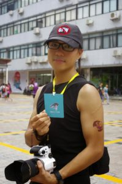

在中国大陆，记者行使言论自由的权利仍然得不到保障，敢于报道真相的记者往往受到恐吓和骚扰，甚至被任意拘捕、遭受酷刑虐待。在今年的记者节，我们记录了5位因搜集、报道真相而被关押的公民，其中几位甚至被以莫须有的罪名起诉。我们向他们的勇气致敬。

甄江华–八零后人权捍卫者
甄江华是一名年轻的人权捍卫者，今年9月，当局以“煽动颠覆国家政权罪”之名将他刑拘。
“今天听说他被抓了，我心里的第一个念头是：这可能是他这几年来最轻松的时刻——看着自己的朋友、美好的抗争者，一个个被抓，心痛之余又要盘算怎么去看望他们的家人，怎么筹措律师费，怎么声援，这才是对他最大的折磨——江华可能心里会想：这次终于轮到我了。”——赵思乐《“时刻准备着”的年轻人》
甄江华是网站“权利运动”的负责人，“权利运动”是一个关注中国人权状况的平台，让草根权利活动人士亲身报告和记录中国的人权状况。同时，他也参与（ATGFW.ORG）的编辑工作。“翻墙网”是一个致力于推动信息获取权利的网上平台。
他在中国从事基层维权工作逾10年，亦因自己的人权工作而多次被羁押。根据自由亚洲电台报道，去年，他曾因前往乌坎村而被警方带走，强行押回珠海，并被以涉嫌“煽动参加非法集会、游行和示威”为名审讯五天之后获释。

刘飞跃–访民的声音
资深公民记者刘飞跃多年来一直坚持报道中国底层民众遭遇的人权问题。通过他创办的网站“民生观察”，他会发放关于强拆受害者及上访人士的消息，亦会发布其他维权人士的声援文章。
因为多年来坚持以和平的方式争取言论自由、捍卫人权，刘飞跃每到两会、六四纪念日等政治敏感时期，都会被软禁或“强制旅游”。去年底，刘飞跃被以“煽动颠覆国家政权罪”批捕，现时有可能被额外加控“为境外非法提供国家秘密”的罪名。
一位不愿公开身份的朋友近期向自由亚洲电台表示，“刘飞跃所谓涉及泄露国家机密的指控，是因为他把一份县级政府的非正式维稳文件放到网上。他又指，刘飞跃妻子坦言压力很大，国保经常找她谈话，要求她劝丈夫认罪，她非常彷徨，曾向朋友征求意见，大家认为没必要劝刘飞跃认罪，应该尊重他的意愿。”

王涛–因报道“大学生失踪案”被关看守所
(照片来源：维权网)
王涛为武汉“网络短视频‘最火视线’新媒体矩阵”的记者。他因最先报道报道武汉多名大学生失踪案而被以“造谣”为由行政拘留，后被转往看守所。
据维权网消息，王涛是唯一敢报道武汉多名大学生失踪案的记者。为帮助那些寻找孩子的父母，王涛于9月27日写下《细思极恐！武汉30多名大学生为何神秘失踪？》的帖子，公布了数十张年轻人的照片，称这些人是自2011年至今在武汉地区失踪的大学生。文章还用排除法，排除了他们身陷传销、被绑架、因犯罪被控制等多种可能性，指这些“消失的年轻大学生神秘失踪，仍然是个迷”。这篇帖子在网络上的得到广泛传播，引发社会关注。
然而，武汉警方以发布虚假信息为由，将王涛行政拘留10天。随后，当局在众多网络平台删除和封杀相关消息。拘留期满后，在拘留所门口等待迎接的家人却被告知王涛已被转看守所。一位失踪武汉大学生的家长对美国之音表示，他们这些失踪学生的家长非常心痛和愤怒，政府不帮他们寻找孩子解决问题，却将曝光消息的记者抓起来，令人不可思议。

黄琦–第一代公民记者
现年53岁的黄琦与前妻曾丽共同创立了六四天网，专门报道上访人士的维权行动。
去年底，黄琦被15名公安从四川成都的家中带走，随后被以“泄露国家机密罪”批捕。黄琦被拘押至今，仍未能和母亲相见一面。
80多岁的母亲蒲文清非常牵挂狱中的儿子：“他身患多种疾病，不知道进两个月身体状况如何，两个律师多次去绵阳阅卷，案管中心工作人员以各种理由推迟。天气冷了，我去给他送点棉衣、棉被、生活费，我只想到我儿子最进的地方看看，我盼有生之日能见他一面。”
先前黄琦也坐过两次监：他首次被拘禁是2000年6月天安门镇压11周年时，并于2003年被以“煽动颠覆国家罪”判刑五年；第二次是2008年四川汶川地震后，他因曝光当地的豆腐渣工程而被捕，后被判监三年。
 卢昱宇–坚持报道群体事件
卢昱宇–坚持报道群体事件
卢昱宇是内地知名博主、劳工维权人士。从2013年起，卢昱宇和女友李婷玉每日整理中国各地的群体事件，并在不同的社交媒体上发布，包括博客及名为“非新闻”的推特账号。
仅仅在2015年，他们就收集了近3万起包括村民抗议征地、工人罢工、业主维权等群体事件。卢昱宇和李婷玉因此经常受到警察恐吓，并几次被逼迁。
去年6月15日，卢昱宇被以“寻衅滋事罪”拘留。关押1年多后，他被法院判处监禁4年，他不服判决，即时向法院提出上诉，但于今年9月被驳回。一位不愿透露姓名的朋友向自由亚洲电台表示，卢昱宇一直都坚持自己的信念，绝不会被当局打压而吓怕。如果他日后刑满出狱，一定会继续在网上为民众发声。